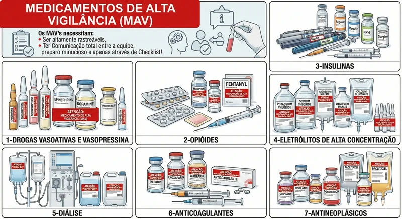
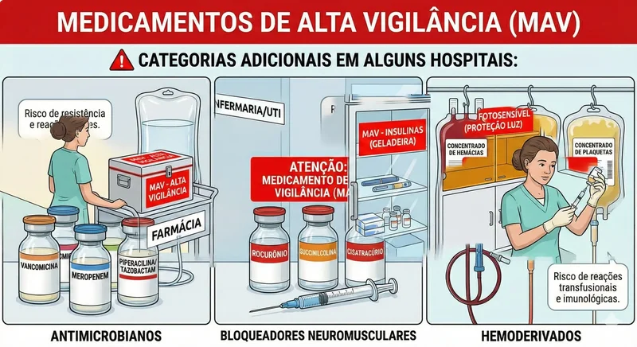
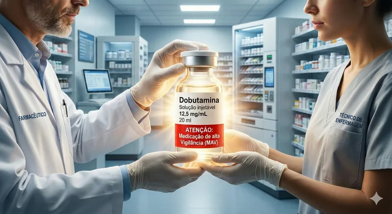
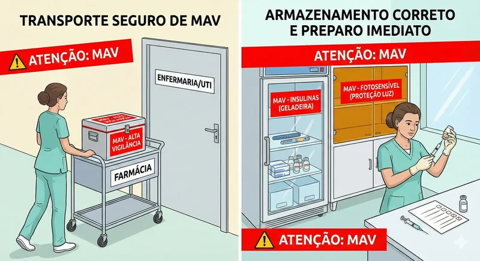
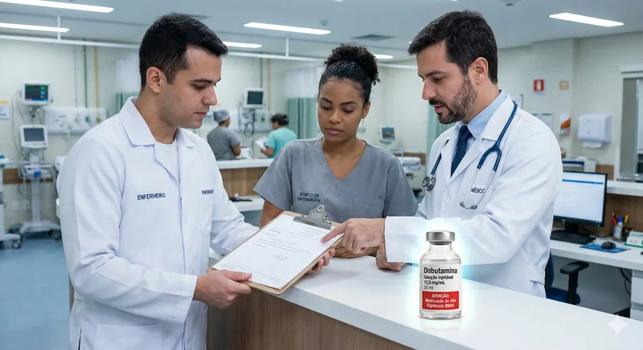
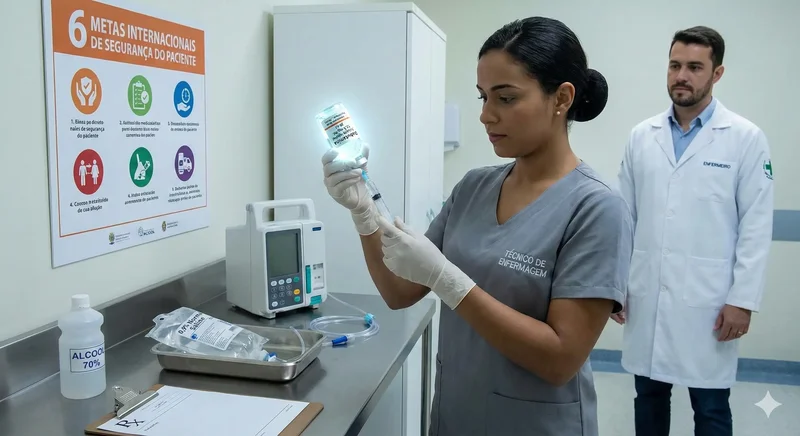
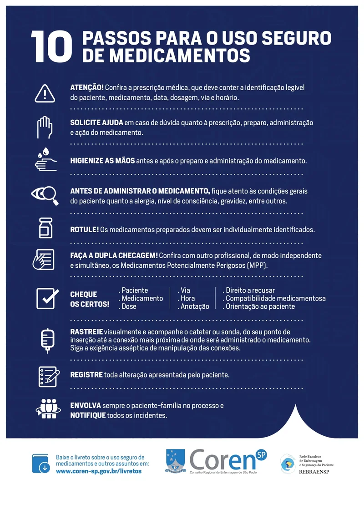
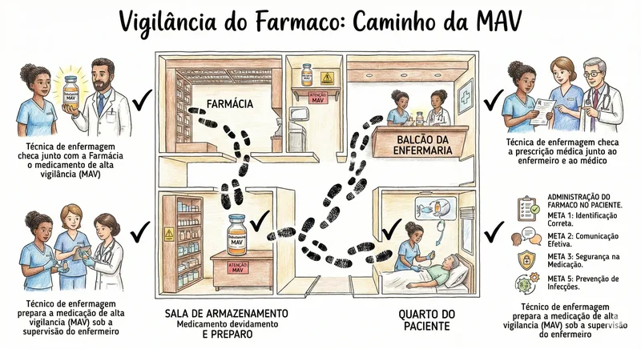

Medicamentos de Alta Vigilância (MAV)
Lista dos principais MAV's, sua importância, rastreabilidade, checklists essenciais, relação com dupla/tripla checagem e as Metas Internacionais de Segurança do Paciente.
O que é Medicação de Alta Vigilância (MAV)?
Medicações de Alta Vigilância (MAV) são aquelas que apresentam maior risco de causar danos graves ou até fatais ao paciente quando administradas de forma incorreta, mesmo quando são utilizados os procedimentos padrões. Por isso, essas medicações exigem cuidados adicionais no seu armazenamento, prescrição, preparo, dispensação e administração.

O Ministério da Saúde, organizações internacionais, como o Institute for Safe Medication Practices (ISMP) e o Instituto Brasileiro para Segurança do Paciente (IBSP), apontam que essas medicações não necessariamente são mais perigosas por sua natureza, mas sim porque qualquer erro relacionado a elas tem maior probabilidade de causar danos significativos.
Por que Vigilância?
Imagine que esse medicamento é tão importante que precisa ter um controle dentro dos Hospitais e instituições de Saúde que precisa ser "Monitorado" do momento que saiu do dispensário da farmácia até seu destino final que é a administração no paciente...Abaixo tipos de perguntas que norteiam os Medicamentos de Alta Vigilância (MAV):
Esse tipo de medicamento necessita dessa vigilância ostensiva conforme explicamos acima. Um erro ou um efeito "quase-erro" pode desencadear o que chamamos de: EVENTO SENTINELA ou EVENTO ADVERSO.
O que é Evento Sentinela?
Um evento sentinela é uma ocorrência grave e inesperada, geralmente na área da saúde, que resulta em morte, dano permanente ou grave ao paciente (ou equipe/visitantes), servindo como um sinal de alerta para falhas sistêmicas que precisam ser investigadas e corrigidas, como cirurgia no local errado ou esquecimento de material. Eles são chamados "sentinela" porque apontam para problemas maiores, exigindo análise de causa raiz e melhoria contínua.
Características Principais:
- Inesperado e Grave: Não relacionado à doença natural do paciente.
- Sinal de Alerta: Indica problemas no sistema que podem levar a mais incidentes.
- Obrigatório Notificar: Exige investigação e análise aprofundada.
E quais são os Medicamentos de Alta Vigilância (MAV)?
Existem inúmeros medicamentos que se enquadram como Medicamentos de Alta Vigilância (MAV), onde eles estão depende de QUE instituição de saúde estamos falando, exemplo: Hospitais Gerais não costumam ter muitos Neoplásicos, todavia hospitais oncológicos sim. Policlínicas não costumam ter muitos medicamentos chamados Drogas Vasoativas, todavia hospitais gerais sim, então isso será a depender de qual tipo de estabelecimento de saúde o profissional está. Em alguns hospitais Antimicrobianos, bloqueadores neuromusculares, hemoderivados e nutrições para enterais entram na lista como MAV's. Abaixo uma lista de alguns tipos de medicamentos que se enquadram na lista de Medicamentos de Alta Vigilância (MAV):.

| Classe Farmacológica | Princípio Ativo | Nome Comercial (Exemplos) |
|---|---|---|
| 1. Drogas Vasoativas e Vasopressina | Adrenalina | Adren, Adrenalina |
| Dobutamina | Dobutrex, Dobutamina | |
| Dopamina | Dopacris, Dopamina | |
| Efedrina | Efedrin | |
| Isoprenalina | Isoprenalina | |
| Metaraminol | Aramin | |
| Noradrenalina | Hyponor, Norepinefrina | |
| Vasopressina | Encrise | |
| 2. Opióides | Alfentanila | Alfast, Rapifen |
| Buprenorfina | Restiva, Transtec | |
| Codeína | Codein | |
| Codeína + Paracetamol | Tylex | |
| Fentanila | Fentanil, Fentanest, Durogesic | |
| Metadona | Mytedom | |
| Morfina | Dimorf | |
| Nalbufina | Nubain | |
| Oxicodona | Oxycontin, Oxypynal | |
| Remifentanila | Ultiva, Remifentanila | |
| Sufentanila | Fastfen, Sufenta | |
| Tramadol | Tramal, Tramadon | |
| Tramadol + Paracetamol | Ultracet | |
| 3. Insulinas | Insulina Humana (Regular) | Humulin R, Novolin R |
| Insulina Isofana (NPH) | Humulin N | |
| Insulina Glargina | Lantus | |
| Insulina Lispro | Humalog | |
| Insulina Detemir | Levemir Flex | |
| Insulina Degludeca | Tresiba | |
| Insulina Asparte | Fiasp | |
| Insulina Glulisina | Apidra | |
| 4. Eletrólitos de Alta Concentração | Cloreto de Potássio | KCl 19,1% |
| Cloreto de Sódio | NaCl 20% | |
| Fosfato de Potássio | 2 mEq/mL | |
| Glicerofosfato de Sódio | Glycophos | |
| Sulfato de Magnésio | Mg 50% | |
| 5. Diálise | Soluções Concentradas | Cloreto de potássio 7g env |
| 6. Anticoagulantes | Apixabana | Eliquis |
| Dabigatrana | Pradaxa | |
| Enoxaparina | Clexane | |
| Heparina | Hemofol, Hepamax-S | |
| Rivaroxabana | Xarelto | |
| Varfarina | Marevan | |
| 7. Antineoplásicos | Abiraterona | Zytiga |
| Alectinibe | Alecensa | |
| Anastrozol | Arimidex, Anastrozol | |
| Atezolizumabe | Tecentriq | |
| Azacitidina | Winduza, Vidaza | |
| Bendamustina | Ribomustin, Treanda | |
| Bevacizumabe | Avastin | |
| Bicalutamida | Casodex, Bicalutamida | |
| Bleomicina | Bonar, Cinaleo | |
| Blinatumomabe | Blincyto | |
| Bortezomibe | Mielocade, Bozored, Velcade | |
| Brentuximabe vedotina | Adcetris | |
| Cabazitaxel | Jevtana | |
| Capecitabina | Xeloda, Corretal | |
| Carboplatina | Fauldcarbo, Tevacarbo | |
| Carfilzomibe | Kyprolis | |
| Carmustina | Nibisnu | |
| Ciclofosfamida | Genuxal | |
| Cisplatina | Fauldcispla | |
| Citarabina | Fauldcita | |
| Cladribina | Leustatin | |
| Clofarabina | Evoltra | |
| Clorambucila | Leukeran | |
| Dacarbazina | Dacarbazina | |
| Dactinomicina | Dacilon | |
| Daratumumabe | Dalinvi | |
| Daunorrubicina | Evoclass | |
| Degarelix | Firmagon | |
| Ditartarato de vinflunina | Javlor | |
| Docetaxel | Docelibbs | |
| Doxorrubicina | Adriblastina, Rubidox | |
| Doxorrubicina lipossomal | Doxopeg | |
| Durvalumabe | Imfinzi | |
| Elotuzumabe | Empliciti | |
| Enzalutamida | Xtandi | |
| Epirrubicina | Epirrubicina | |
| Eribulina | Halaven | |
| Etoposídeo | Eposido | |
| Everolimo | Afinitor, Certican | |
| Exemestano | Aromasin | |
| Fludarabina | Fludalibbs | |
| Fluoruracila | Fauldfluor | |
| Fulvestranto | Faslodex, Supreniq, Fulvestranto | |
| Gencitabina | Gencix | |
| Gentuzumabe | Mylotarg | |
| Hidroxiuréia | Hydrea, Tepev | |
| Idarrubicina | Evomid, Zavedos | |
| Ifosfamida | Holoxane, Evolox | |
| Imatinibe | Imatinibe | |
| Ipilimumabe | Yervoy | |
| Irinotecano | Camptosar, Tecnotecan, Irinotecano, Trebyxan | |
| Lenalidomida | Revlimid | |
| Letrozol | Femara | |
| Melfalana | Alkeran, Alkacel | |
| Mercaptopurina | Purinethol | |
| Metotrexato | Fauldmetro, Metrotexato, Miantrex, Metrexato | |
| Mitoxantrona | Evomixan | |
| Nivolumabe | Opdivo | |
| Obinutuzumabe | Gazyva | |
| Oxaliplatina | Tevaoxali, Eloxatin | |
| Paclitaxel | Taxol, Ontax, Abraxane | |
| Pazopanibe | Votrient | |
| Pegaspargase | Oncaspar | |
| Pembrolizumabe | Keytruda | |
| Pemetrexede | Alimta, Atred, Plexeden, Pemeglenn | |
| Pertuzumabe | Perjeta | |
| Pertuzumabe + Trastuzumabe | Phego | |
| Ramucirumabe | Cyramza | |
| Rituximabe | Mabthera | |
| Ruxolitinibe | Jakavi | |
| Sorafenibe | Nexavar | |
| Tamoxifeno | Nolvadex, Tamoxifeno | |
| Temozolomida | Temodal | |
| Topotecana | Evotecan, Topotecana, Hycamtin | |
| Trastuzumabe | Herceptin, Zedora | |
| Trastuzumabe entansina | Kadcyla | |
| Tretinoína | Vesaoid | |
| Trióxido de arsênio | Trisenox | |
| Venetoclax | Venclexta | |
| Vimblastina | Faulblastina, Velban | |
| Vincristina | Fauldvincri, Tecnocris, Voncristina | |
| Vinorelbina | Evotabina, Navelbine, Norelbin |
*Lista resumida. Consulte a farmácia hospitalar para a relação completa da sua instituição.
Fluxo da Dispensação até a Administração
1. CHECAGEM INICIAL
Realize a checagem da medicação liberada na farmácia e o que foi prescrito junto ao farmacêutico clínico.

2. ARMAZENAMENTO SEGURO
Chegando com a medicação da farmácia até a enfermaria/UTI/Bloco cirúrgico verifique ONDE o fármaco ficará armazenado, alguns fármacos necessitam de temperatura adequada necessitando de geladeira como Insulinas, outros proteção contra luz, o mais importante, MAV's normalmente apenas são liberados quando realmente estiver bem próximo do horário de sua administração, então cuidado onde deixa-los. De preferência apenas para manipular quando for prepara-lo.

3. DUPLA CHECAGEM (Obrigatório)
Deve ser realizada com seu enfermeiro. Não realize a dupla checagem com outro técnico de enfermagem. Lembre-se: este medicamento é um MAV! Confira os 10 Certos da Enfermagem.
4. TRIPLA CHECAGEM
Certos medicamentos exigem segurança extra. Quem participa? Além do seu enfermeiro, o médico prescritor ou o farmacêutico clínico. Veja mais em Dupla e Tripla Checagem.

5. PREPARE O MEDICAMENTO
O ideal é que ele seja preparado sob supervisão do seu enfermeiro, na dupla checagem e até por vezes, certos fármacos MAV's, deverão ser preparados pelo próprio enfermeiro com é o caso de neoplásicos, hemoderivados e nutrição paraenteral.

6. ADMINISTRAÇÃO
Siga os 10 passos novamente a beira leito do paciente; Meta internacional 1: Identificação correta do paciente e Meta internacional 5: Higienização das mãos, caso haja dúvidas por parte do paciente ou do acompanhante faça o possível para sana-las, caso não saiba ou haja insegurança por parte do paciente chame seu enfermeiro para explicar.

Resumo
Alta Vigilância nos medicamentos é como o próprio nome já diz vigília constante, da retirada do medicamento da farmácia ate a administração do fármaco devido a alta probabilidade de riscos de eventos adversos ou sentinela, não tenha medo de preparar esses medicamentos mas aplique sempre os checklists, siga os protocolos estabelecidos pelo hospital e SEMPRE, aplique dupla e tripla checagem, a prescrição pode estar obviamente correta e sua administração seja corriqueira mas a dupla e tripla checagem alerta demais profissionais "Opa! este medicamento está circulando", o "botãozinho interno de vigia" do seu enfermeiro e demais profissionais estará ligado. NUNCA em hipótese alguma prepare um medicamento de alta vigilância sozinho (sozinho no sentido de apenas só você saber que está preparando), erramos, as vezes estamos cansados, ou as vezes simplesmente precisamos de um alerta A MAIS sobre aquele fármaco. VIGILÂNCIA!

Referências Bibliográficas:
- BRASIL. Ministério da Saúde. Programa Nacional de Segurança do Paciente – Portaria MS/GM nº 529, de 1º de abril de 2013. Disponível em: https://bvsms.saude.gov.br/bvs/saudelegis/gm/2013/prt0529_01_04_2013.html
- ANVISA. Protocolo de Segurança na Prescrição, Uso e Administração de Medicamentos. Agência Nacional de Vigilância Sanitária, 2013. Disponível em: Link ANVISA
- ISMP Brasil. Lista de Medicamentos de Alta Vigilância. Disponível em: https://www.ismp-brasil.org/